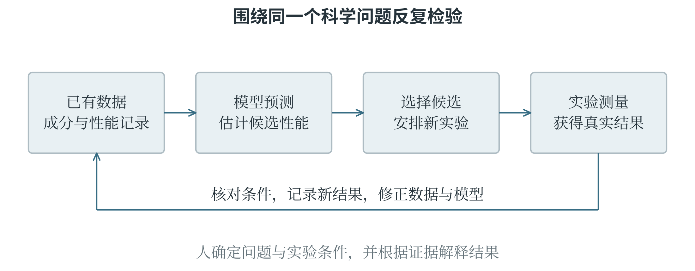

8.2 人工智能与科学研究、社会发展
用模型帮助认识自然
AI for Science 指使用人工智能帮助解决自然科学等领域的问题，例如预测分子结构、筛选材料、分析天文观测和加速物理过程计算。科学问题常有自己的约束：测量单位要一致，结果要符合已知物理条件，实验过程要可检查。这些领域知识与数据一起决定模型的输入、训练目标，以及怎样检验预测。
蛋白质结构预测是一个重要例子。蛋白质由氨基酸按顺序连接而成，链条会形成空间结构，而结构与许多生物功能有关。AlphaFold 系列模型利用已有结构数据等信息学习关系，帮助预测蛋白质及相关分子体系的三维结构。AlphaFold 2 在蛋白质结构预测上取得重要进展，AlphaFold 3 进一步面向多种生物分子及其相互作用结构。
这类结果能够帮助研究者提出问题、设计实验，但结构预测并不自动回答分子在所有条件下怎样运动、是否具有某种功能，更不等于完成了后续应用验证。
在材料研究中，可能有大量候选配方，每个都制作和测试，代价很高。模型可以先根据成分、结构和已有测量预测性能，筛出值得进一步实验的候选。一个闭环是：收集已有实验数据，训练预测模型，选择新候选，进行真实实验，再用新结果更新认识。图 8-5 将模型计算与现实检验接在一起：排名靠前的是值得研究的候选，实验则提供判断预测是否成立的新证据。

表 8-1 是用于说明判断方法的示意数据，性能单位假定为同一种计量单位，数值越大越好。三个候选使用相同实验流程各测量三次。
表 8-1 候选材料的预测值与重复实验示意
| 候选 | 模型预测 | 三次实验结果 |
|---|---|---|
| A | 82 | 80、81、80 |
| B | 90 | 88、62、87 |
| C | 78 | 77、78、79 |
B 的预测最高，其中两次实验也较高，但一次明显偏低。不能为了让结果与模型一致就删去 62，应先核对样品、测量和实验条件。A 的结果较稳定，可以支持继续研究，却也不能用这三次测量证明它在所有环境中都稳定。预测误差、重复性和适用条件共同决定下一步怎样安排。科学计算中，异常结果有时正是发现新问题的线索。
从辅助计算到参与研究流程
AI for Research 更强调人工智能参与研究过程本身，例如检索和整理已有知识，提出候选假设，编写分析程序，比较实验方案，协助解释结果。它与 AI for Science 的范围有重叠：一个系统既可以预测材料性能，也可以帮助研究者决定下一批实验。两者的区别主要在讨论重点，不是一道严格互斥的边界。
谈论研究方式时，有一种常见概括：实验观察、理论推导、计算模拟和数据密集研究分别代表几类重要方法，人机协同、由 AI 深入参与研究流程的方式则被称为科研第五范式。这是一种对研究方式变化的概括，学术讨论中的名称和边界并非完全统一，也不表示后一种方式淘汰前面的方式。
生成许多假设，还不等于增加了同样多的知识。
一个假设需要与已有证据相容，能够提出可检查的预测，并通过合适的实验或观察接受检验。多个模型互相评价也不能替代现实证据；如果它们依据相近材料、共享相同偏差，意见一致仍可能是一起出错。保存原始记录、代码、模型设置和失败结果，有助于别人复核结论，也有助于研究者自己找到误差来源。
技术收益怎样分配
人工智能可以减少重复劳动，帮助识别海量信息，改善无障碍交流，并为教育、农业、交通和科研提供新的工具。语音转写能让听觉障碍者更方便地获得内容，图像分析可以帮助统计作物生长情况，预测系统可以支持资源安排。具体收益取决于系统是否适合当地数据、能否负担运行成本，以及使用者是否获得必要培训。同一种能力也会改变工作分工。自动整理记录能节省时间，但如果只减少人员、不保留复核和处理异常的能力，系统出错时可能无人应对。部分岗位中的任务会被自动化，另一些任务则需要更多数据整理、判断、沟通和监督。
就业受到怎样的影响，还要看组织怎样安排转型和培训，以及由谁承担成本、由谁获得收益。
模型表现不均衡，也会影响机会分配。一个识别系统如果只在某些口音、光照或设备上表现较好，广泛使用后可能让其他使用者更难获得服务。整体平均分可能掩盖这些差异，因此第五章的分组评价不仅是技术细节，也与公平相关。公平本身还可能有不同衡量方式，需要结合具体目的讨论，不能指望一个数字同时解决所有价值冲突。
训练和运行模型需要电力、设备与数据，计算资源的成本也会影响谁能够研究和使用技术。模型越大并不自动越适合每个任务。若一个较小模型已经满足准确度、时延和适用范围要求，部署更庞大的模型未必带来相应收益。技术选择需要同时考虑效果、资源和实际使用条件。
平均表现背后的不同处境
一个语音识别系统在 100 段录音中识别正确 90 段，整体准确率为 90%。如果其中 80 段来自甲组，识别正确 76 段；20 段来自乙组，识别正确 14 段，那么两组准确率分别为 95% 和 70%。表 8-2 中的总数没有算错，但它把两组相差很大的使用体验压成了一个平均值。
表 8-2 语音识别的分组评价示意
| 录音来源 | 录音数 | 正确数 | 准确率 |
|---|---|---|---|
| 甲组 | 80 | 76 | 95% |
| 乙组 | 20 | 14 | 70% |
| 合计 | 100 | 90 | 90% |
为什么会有这种差别，还不能只看表格就下结论。可能是训练数据里某类口音较少，也可能是两组录音设备不同，或者乙组录音环境更嘈杂。下一步应分别检查这些因素，并在相近条件下比较。发现差距是调查的起点，解释原因则需要更多证据。
如果这个系统只是帮助整理个人笔记，用户可能愿意自己修改错误；如果它是获取学校服务的唯一入口，识别较差的一组就可能反复被挡在外面。相同错误率在不同用途下带来的后果不同。因此，改进模型之外，还可以保留文字输入、人工协助等方式，让识别失败的人能够继续完成原来的事情。
典型治理文件关注什么
人工智能治理是围绕开发、部署和使用制定规则、分配责任，并持续处理影响的过程。不同国家和地区既希望发展技术，也以不同方式规定风险与权利保护。理解典型文件时，要分清法律规则、政策方向和自愿性框架，不能把某一份文件等同于一个国家对人工智能的全部态度。
中国 2023 年发布的《生成式人工智能服务管理暂行办法》强调促进技术发展与管理风险相结合，并对适用范围内的服务提出数据、内容和使用者权益等要求。例如，提供者需要保护使用者输入和使用记录中的个人信息，避免收集无必要的信息；数据标注应有明确规则并检查质量。阅读这份文件时，应同时看它规定的适用范围。
欧盟 2024 年通过的《人工智能法案》采用基于风险的规则，对某些用途规定禁止或较严格要求，也涉及透明度、人类监督和通用人工智能模型等事项。理解它的重点是使用场景与影响：同一种技术用来整理相册，与用来影响教育、就业等重要机会，可能涉及不同要求。具体适用时间和细则会分阶段实施或调整，判断案例应依据当时有效的具体条文。
美国国家标准与技术研究院 NIST 的《人工智能风险管理框架》1.0 于 2023 年发布，是供自愿使用的风险管理框架，强调治理、识别情境、测量和管理等工作。它的法律性质与欧盟法案不同，但自愿采用某一框架，不等于使用者可以忽略现有法律或已经发现的实际问题。
这些文件的共同关注包括可靠性、透明度、数据和权利保护、责任安排等，但具体义务与适用对象不同。分析学校应用案例时，可以先辨认系统处理哪些数据、作出什么决定、影响哪些人，再查相关规则如何作用于这些环节。不能因为服务商做过评价，就省略学校自己使用场景中的判断。
人的判断与责任
人工智能可以参与决策，但大语言模型本身不能像自然人一样承担社会责任。系统产生错误时，需要检查开发、部署、管理和使用各方在具体情境中的职责，不能以“模型自己决定的”结束讨论。人机协同也不等于给每个自动结果象征性地加一个确认按钮，负责复核的人必须理解所需信息，并有能力改变或停止不合适的行动。
有些问题包含两难冲突：不同价值都值得维护，却不能在当前条件下同时达到最好。例如，为了更及时发现校园危险，增加摄像与识别可能有帮助，但持续收集所有人的细节又可能侵入隐私。处理这类问题，需要讨论目的是否必要、能否减少收集、哪些区域适合使用、谁能查看、多久删除，以及发生争议时如何处理。
模型可以帮助比较方案，社会愿意接受怎样的取舍，仍需要人来讨论和决定。
教育中也存在类似的判断。AI 可以解释概念、提示错误、生成练习，但若学习者只复制答案而不理解过程，表面完成的作业无法反映真实能力。这是第一章所说认知外包的一种风险。较有价值的使用方式，是把工具的帮助接回自己的推理：核对条件，解释每一步，换一组数据再试，发现不一致时寻找原因。读懂程序、公式和证据，才能判断工具是否帮忙解决了原来的问题。